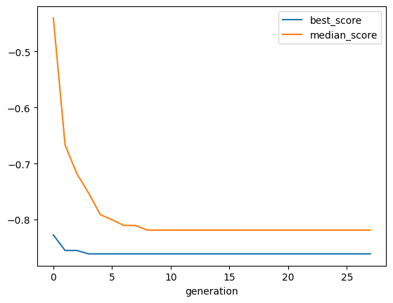
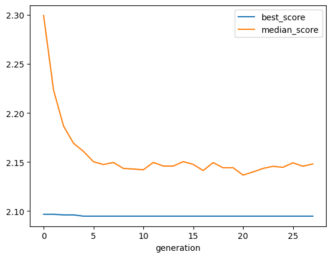

[1]:
from sklearn.linear_model import LinearRegression
from sklearn.model_selection import train_test_split, cross_val_score
from sklearn.metrics import mean_absolute_error
import featuristic as ft
import numpy as np
np.random.seed(8888)
print(ft.__version__)
1.0.0
Load the Data#
[2]:
X, y = ft.fetch_cars_dataset()
X.head()
[2]:
| displacement | cylinders | horsepower | weight | acceleration | model_year | origin | |
|---|---|---|---|---|---|---|---|
| 0 | 307.0 | 8 | 130.0 | 3504 | 12.0 | 70 | 1 |
| 1 | 350.0 | 8 | 165.0 | 3693 | 11.5 | 70 | 1 |
| 2 | 318.0 | 8 | 150.0 | 3436 | 11.0 | 70 | 1 |
| 3 | 304.0 | 8 | 150.0 | 3433 | 12.0 | 70 | 1 |
| 4 | 302.0 | 8 | 140.0 | 3449 | 10.5 | 70 | 1 |
[3]:
y.head()
[3]:
0 18.0
1 15.0
2 18.0
3 16.0
4 17.0
Name: mpg, dtype: float64
Genetic Feature Synthesis#
[4]:
X_train, X_test, y_train, y_test = train_test_split(X, y, test_size=0.33)
synth = ft.GeneticFeatureSynthesis(
num_features=5,
population_size=200,
max_generations=100,
early_termination_iters=25,
parsimony_coefficient=0.025,
n_jobs=-1,
)
synth.fit(X_train, y_train)
None
Creating new features...: 27%|████▎ | 27/100 [00:11<00:26, 2.72it/s]
Pruning feature space...: 100%|██████████████████| 5/5 [00:00<00:00, 522.97it/s]
Creating new features...: 27%|████▎ | 27/100 [00:12<00:33, 2.20it/s]
View the Synthesised Features and Their Formulas#
[5]:
generated_features = synth.transform(X_train)
generated_features.head()
[5]:
| displacement | cylinders | horsepower | weight | acceleration | model_year | origin | feature_0 | feature_1 | feature_3 | feature_2 | feature_4 | |
|---|---|---|---|---|---|---|---|---|---|---|---|---|
| 0 | 89.0 | 4 | 62.0 | 2050 | 17.3 | 81 | 3 | 0.673279 | -0.009878 | 0.566434 | -0.917052 | 0.536626 |
| 1 | 318.0 | 8 | 150.0 | 4077 | 14.0 | 72 | 1 | 0.133744 | -0.002208 | 0.324324 | -0.226914 | 0.318668 |
| 2 | 383.0 | 8 | 170.0 | 3563 | 10.0 | 70 | 1 | 0.144654 | -0.002456 | 0.291667 | -0.183216 | 0.287549 |
| 3 | 260.0 | 8 | 110.0 | 4060 | 19.0 | 77 | 1 | 0.153605 | -0.002371 | 0.411765 | -0.295020 | 0.400227 |
| 4 | 318.0 | 8 | 140.0 | 4080 | 13.7 | 78 | 1 | 0.156848 | -0.002390 | 0.357798 | -0.245131 | 0.350213 |
[6]:
info = synth.get_feature_info()
info
[6]:
| name | formula | fitness | |
|---|---|---|---|
| 0 | feature_0 | (-(((model_year / (weight + cylinders)) + sin(... | -0.861120 |
| 1 | feature_1 | -((model_year / (weight + cylinders))) | -0.855109 |
| 2 | feature_3 | abs(abs(-(-((model_year / (model_year + horsep... | -0.829949 |
| 3 | feature_2 | (-(model_year) / (displacement - cos(horsepowe... | -0.831506 |
| 4 | feature_4 | sin(abs((model_year / (model_year + horsepower... | -0.827386 |
Feature Selection#
[15]:
def objective_function(X, y):
model = LinearRegression()
scores = cross_val_score(model, X, y, cv=3, scoring="neg_mean_absolute_error")
return scores.mean() * -1
[8]:
selector = ft.GeneticFeatureSelector(
objective_function,
population_size=200,
max_generations=100,
early_termination_iters=25,
n_jobs=-1,
)
selector.fit(generated_features, y_train)
selected_features = selector.transform(generated_features)
Optimising feature selection...: 28%|██▌ | 28/100 [00:05<00:13, 5.22it/s]
View the Selected Features#
[9]:
selected_features.head()
[9]:
| displacement | horsepower | weight | origin | feature_0 | feature_1 | feature_3 | feature_2 | |
|---|---|---|---|---|---|---|---|---|
| 0 | 89.0 | 62.0 | 2050 | 3 | 0.673279 | -0.009878 | 0.566434 | -0.917052 |
| 1 | 318.0 | 150.0 | 4077 | 1 | 0.133744 | -0.002208 | 0.324324 | -0.226914 |
| 2 | 383.0 | 170.0 | 3563 | 1 | 0.144654 | -0.002456 | 0.291667 | -0.183216 |
| 3 | 260.0 | 110.0 | 4060 | 1 | 0.153605 | -0.002371 | 0.411765 | -0.295020 |
| 4 | 318.0 | 140.0 | 4080 | 1 | 0.156848 | -0.002390 | 0.357798 | -0.245131 |
Compare New Features to Original Features#
[10]:
model = LinearRegression()
model.fit(X_train, y_train)
preds = model.predict(X_test)
original_mae = mean_absolute_error(y_test, preds)
original_mae
[10]:
2.5888868138669303
[11]:
model = LinearRegression()
model.fit(selected_features, y_train)
test_features = selector.transform(synth.transform(X_test))
preds = model.predict(test_features)
featuristic_mae = mean_absolute_error(y_test, preds)
featuristic_mae
[11]:
2.1729482398016042
[12]:
print(f"Original MAE: {original_mae}")
print(f"Featuristic MAE: {featuristic_mae}")
print(f"Improvement: {round((1 - (featuristic_mae / original_mae))* 100, 1)}%")
Original MAE: 2.5888868138669303
Featuristic MAE: 2.1729482398016042
Improvement: 16.1%
View the History of the Genetic Algorithms#
[13]:
synth.plot_history()

[14]:
selector.plot_history()
